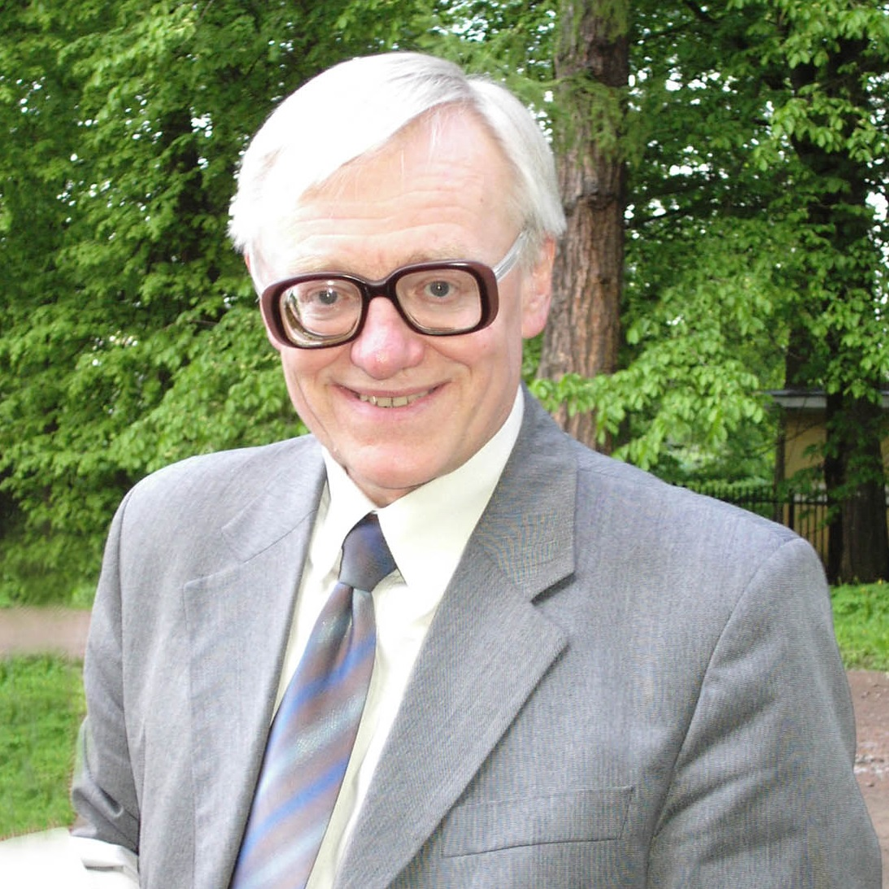
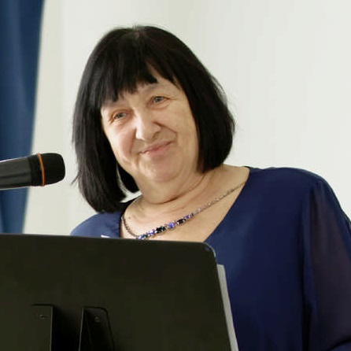
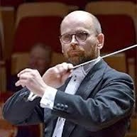

Логинов Александр Петрович
(Санкт-Петербург)
Заслуженный работник культуры РФ, председатель цикловой комиссии хорового
дирижирования музыкального училища им. Н.А. Римского-Корсакова.

Жданова Татьяна Арамовна
(Москва)
Заслуженная артистка России, лауреат государственных премий,
директор ЦТР и МЭО "Радость", методист, дирижер, директор нескольких хоровых фестивалей и
конкурсов "Звучит Москва", "Рождественская песнь", "Поют дети Московии" и др.

Мроз Мариуш
(Гданьск, Польша)
Дирижёр, общественный деятель, преподаватель университета в г.Быдгощь,
руководитель Гданьского хора технического университета и камерного хора «Continuo» в г.Сопот,
лауреат европейских конкурсов, автор публикаций об исполнении православной музыки.
Тунгал Ольга Джоновна
(Таллинн, Эстония)
Доцент Эстонской Академии Музыки и Театра, руководитель
Русской Хоровой Капеллы (г. Таллин), лауреат международных хоровых конкурсов.
Миронов Александр Юрьевич
(Москва)
Музыкальный руководитель московского театра "Кураж",
старший преподаватель Института современного искусства, создатель вокальной группы "CoffeetimeBand",
лауреат всероссийских и международных конкурсов.
Стич Крисович Сандерс
(Кауаи)
На Земле прикидывается собакой и другом-человеком
Лило по имени 'Кенни', также известен как 'Синяя коала', 'Коала-мутант',
'Неистовый еж', 'Маленький голубой шар разрушения',собака или странная собака.